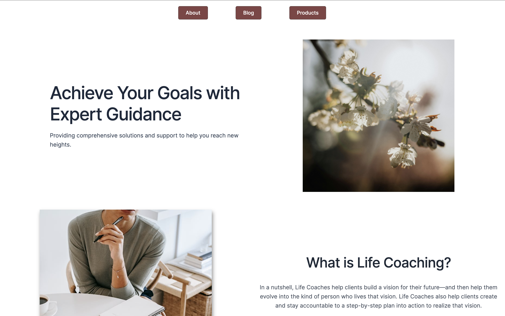

Websites

Tyrina's Website
Designed and developed a professional website to help launch a life coaching business, showcasing services, client testimonials, and a user-friendly interface to attract and engage potential clients.
View Project
Hutchings Museum Educational Pages
Collaborated on the Hutchings Museum website, creating dynamic and informative education and events pages to enhance user engagement and promote community activities.
View ProjectLogos

Rexburg Free Clinic Logo
Designed a professional logo for the Rexburg Free Clinic, representing their mission as a donation center dedicated to supporting the community.

Eco Smart Logo
Developed a clean and impactful logo for Eco Smart, a business specializing in innovative housing insulation improvements.